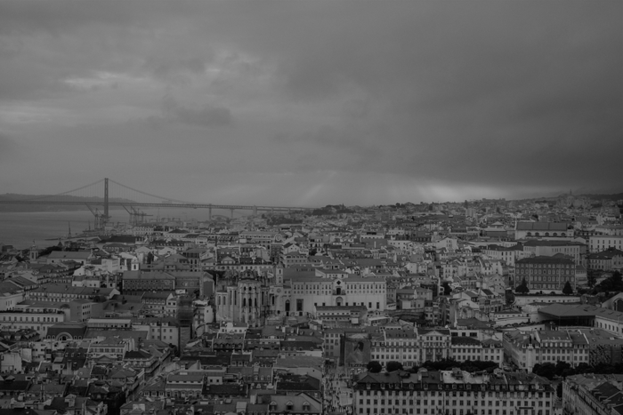

Lisboa revisitada
Autor: José Antonio Montano
Fecha de publicacion: 2018-10-30

Es el marqués de Pombal, servicial como un mayordomo, el que nos hace pasar a la Lisboa bonita. El taxi que sale de la estación de Sete Rios atraviesa una zona impersonal de la ciudad, con grandes edificios de oficinas que podrían estar en cualquier parte. Pero de pronto aparece la estatua de Pombal y ya sí: la avenida da Liberdade, la praça dos Restauradores, el Rossio, la Baixa… Los sitios que reconoce el que vuelve a visitarla.
Llegamos cuando amanecía, aunque con poca luz: estaba nublado y lloviznaba. La praça do Comércio era muchísimo más espaciosa de como la recordaba de mi anterior viaje. El arco de entrada y la estatua central estaban tapados para su restauración: esto fomentaba la grisura ambiente. En medio había parado un tranvía, cuyas luces, como las de las farolas y las ventanas, se reflejaban en el suelo mojado. Avanzamos hacia la orilla, hasta los dos pilares que acaban en bola, cada una con su gaviota perenne. El agua había subido al último escalón. A lo lejos, el puente 25 de Abril —un trazo japonés en la grisura— parecía ser una pasarela sobre la nada. Al Cristo de la otra ribera lo envolvía la neblina, como en un aleteo pagano. El mesianismo sebastianista dice que el rey volverá en un día de niebla. Será entonces «la Hora».
Hacia el este del Terreiro do Paço se ven, mirando arriba, las casitas del barrio de Alfama, la catedral y el castillo de São Jorge. Tomamos un café en el embarcadero. Allí, protegidos de la llovizna, hicimos tiempo en un banco, entretenidos con la gente que cada pocos minutos bajaba del ferry, con ajetreo de metro, rumbo a su jornada laboral. Llegó el momento de ir al hotel. Subimos por la rua Augusta hasta la rua da Vitória, que estaba en obras, con la calzada levantada y montones de adoquincitos a los lados. Cuando volvimos a salir, lo hicimos ya con otra actitud. Soltar el equipaje le devuelve a uno la condición de transeúnte sin más, aunque su mirada sea nueva. Ya puede pasear sin lastre, camuflado.
La impresión por la rua Augusta es de dignidad, de elegancia. Predomina un neoclasicismo con gusto que se muestra señorial con los habitantes. Los edificios, con sus buhardillas, le recordaban París a A. Ella vivió allí un año. Paseando más tarde por el Bairro Alto, dijo que el panorama de tejados solo se diferenciaba del parisino en la ausencia de chimeneas.
En las fachadas altas de la Baixa se notaba la corrosión del océano: como el ataque del Atlántico a la ciudad, con afecciones de barco. Lisboa ha sido comparada con un barco; por ejemplo, en Lisboa. Diario de a bordo de José Cardoso Pires («te me apareces posada sobre el Tajo como una ciudad que navega»). En la librería Bertrand me compré el libro ideal para completar el viaje en casa: la Biografia de Lisboa de Madga Pinheiro, que aún no está en español. Leyendo sobre el terremoto de 1755 caí en que entonces Lisboa experimentó un naufragio, como el de los navegantes portugueses. Fernando Pessoa escribió: «¡Oh mar salado, cuánta de tu sal / son lágrimas de Portugal!». Al terremoto le siguió un maremoto y los lisboetas que nunca habían navegado vivieron una tempestad también.
Del Imperio portugués me seduce la interpretación metafísica de Pessoa en Mensaje. Como si la conquista no fuera de otras tierras, sino del océano infinito: «Que el mar con fin será griego o romano: / el mar sin fin es portugués». La vía del navegante es ascética, mística; su navegación es una prueba: «¿Valió la pena? Todo vale la pena / si el alma no es pequeña. / Quien quiere traspasar el Bojador / ha de traspasar el dolor». Y al final: «Deus ao mar o perigo e o abismo deu, / Mas nele é que espelhou o céu». Dios le dio al mar el peligro y el abismo, pero fue en él donde reflejó el cielo.
Como si obedeciera justo a esa pauta, el naufragio de la ciudad que constituyó el terremoto tuvo implicaciones filosóficas. Kant se ocupó de él. Y Voltaire, que le dedicó un poema y lo sacó en el Cándido como demostración de que no estamos en el mejor de los mundos posibles. Según escribió Adorno: «El terremoto de Lisboa fue suficiente para curar a Voltaire de la teodicea de Leibniz». A la larga, la catástrofe produjo una reacción racionalista, ilustrada, con las reformas del marqués de Pombal. Pero los horrores de la destrucción y el fuego, y la iconografía tétrica de las ruinas, supusieron un impulso prerromántico que se extendió a toda Europa.